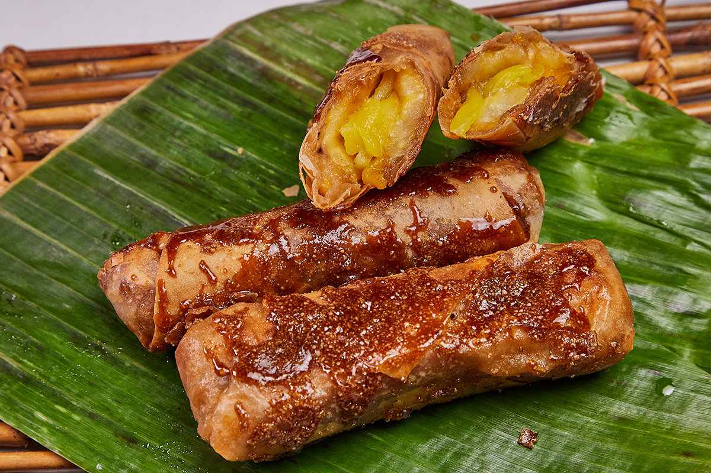

Mains:
Adobo
One of the most well known outside of the Philippines, and also very easy to make.
It is all simple and short ingredients list of:
- Vinager
- soy sauce
- bay leaves
- and a protien of choice.

Sinigang
This is a tamarind based soup, can be made from any protien such as: salmon, pork, chicken, and shrimp. It is usally accompanied with yard long beans and chinese water spinach, but can have other greens as well.
Pancit
There are many iterations of this dish, but in essence it is usually a rice based noodle dish with vegetables. The toppings vary quite often from fish, chicken, and pork.

Desserts or Snacks:
Puto
Puto is steamed rice cakes, traditionally they are made from a fermented rice dough. Although depending on the region it can be made with other materials. While this can be a dessert, other iterations can be eaten with stews.
Turon
Turon is a fried dessert, popularly made with saba/baby banana or langka/jackfruitfilling. Its outer shell is made from a spring roller wrapper, after its fried its dusted with brown sugar.
Halo-Halo
Its meaning means mix-mix, it is a crushed ice based dessert that many other Asian countries also have. But in the Philippines, the ice is covered in condensed or evaporated milk. And popular toppings for that base are ube, sweetened beans, coconut strips, sweetened jackfruit, taro, flan and other fruits.